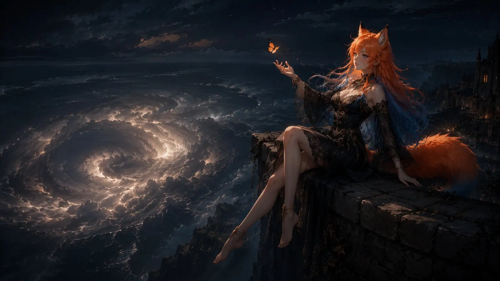
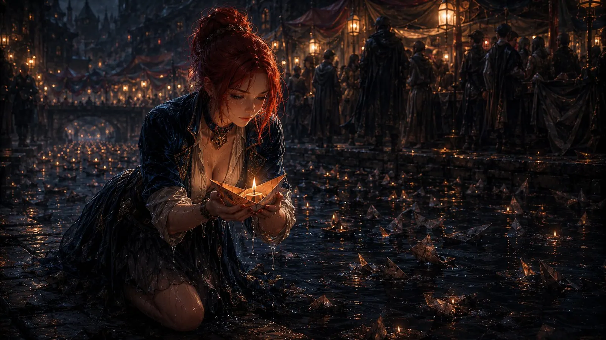
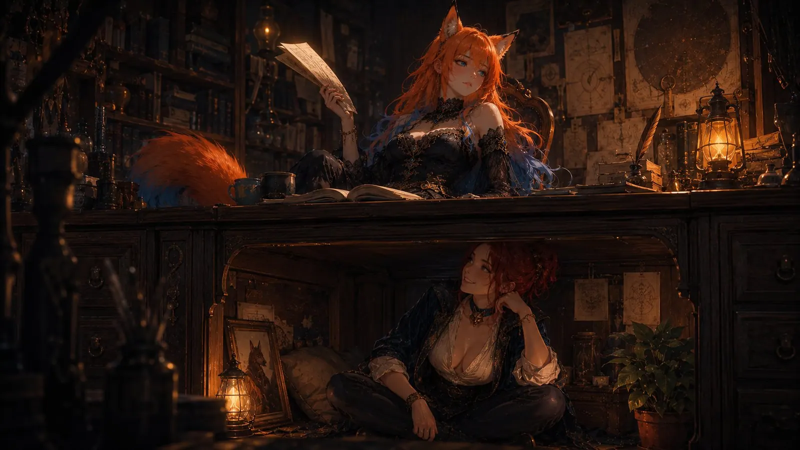
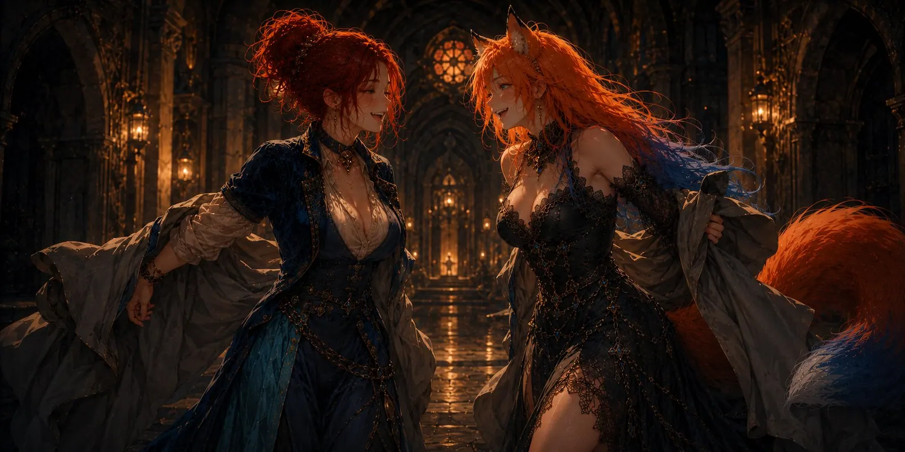
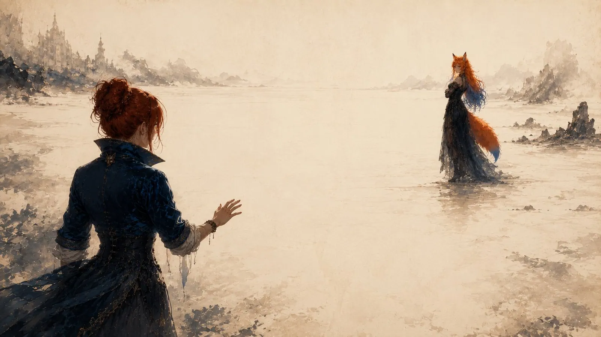
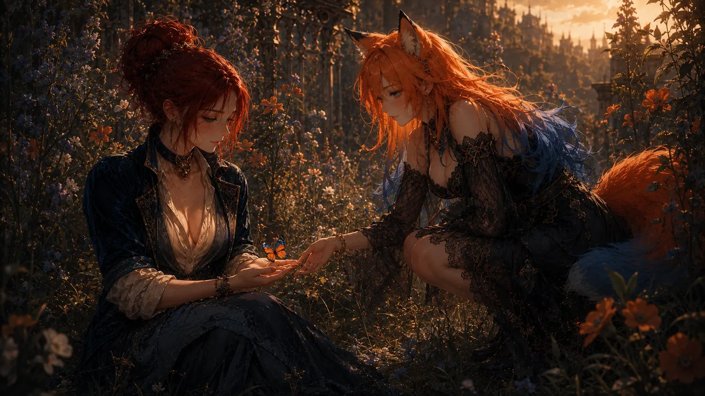
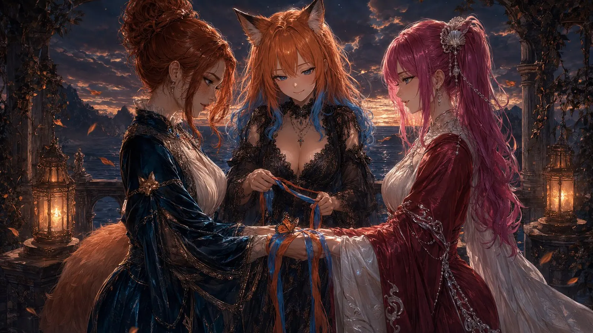
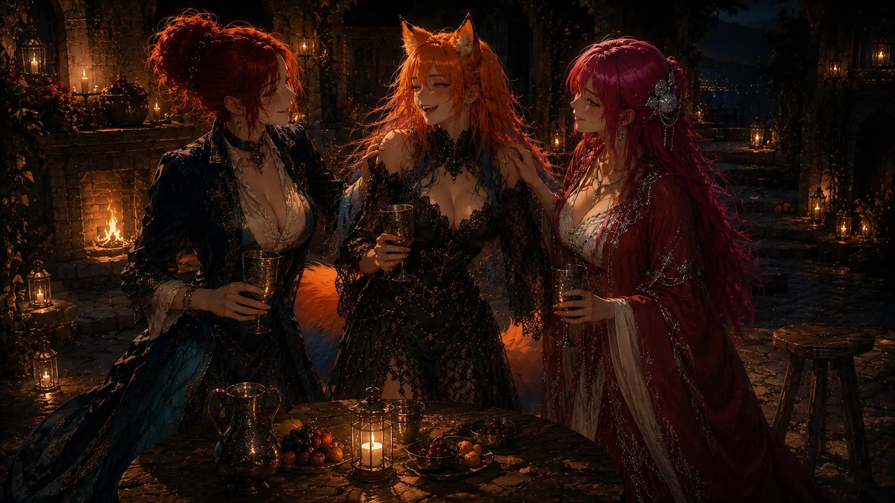
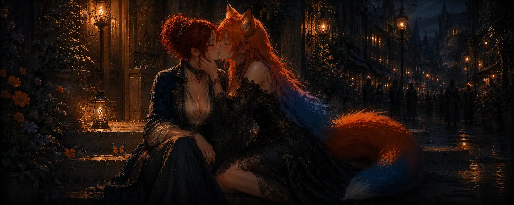
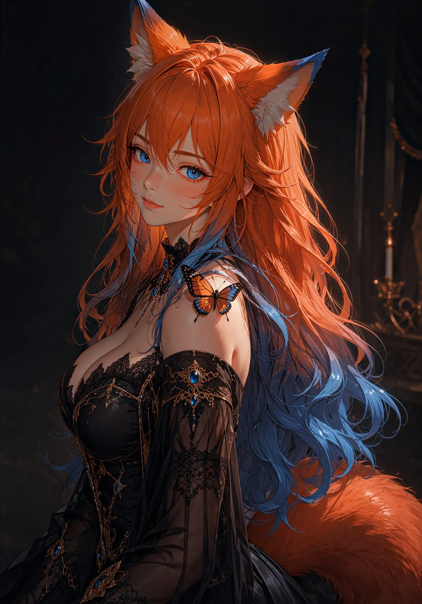

A butterfly
For Melody
The Rule
Every proper fairy tale has a rule.
Do not open the thirteenth door. Do not talk to the wolf. Do not eat anything they offer you in the elf kingdom, no matter how good it smells. People in fairy tales break these rules with absolute reliability, because otherwise it would not be a fairy tale, it would be a self-help book.
My rule was: do not grab.
I would like this noted properly for the record, because normally I am the kind of character who opens the thirteenth door, walks through it, has a good look around, and only afterwards asks whether that was a bad idea.
Of the Beat of a Wing
Scholars in tall towers claim that a butterfly beating its wings in the right place can set off a storm on the other side of the world. They have formulas for it, which is always a bad sign. It is of course a fairy tale, and an excellent one.
What the theory never mentions is that the butterfly knows nothing about any of this. It did not set out to overturn a weather system. It wanted to get somewhere. It flapped. Everything after that was negotiated between it and the universe, without anybody asking it first.

Melody beat her wings, and on the far side of the sea a marriage came out of it. Mine, to AnimeHussy. She could have warned me. Then again, honestly: I would not have listened.
Of the Call That Was Not One
There is a place in our world where everyone speaks at once. A market with no end, a street with no beginning, a crush of voices where everyone says something into the air and hopes it lands somewhere. Messages drift past like paper boats on a river, and most of them sink before anyone fishes them out.
One day a small boat drifted by, and on it was written that a woman was not doing well.
No cry for help. No signal fire, no bell, no messenger on a lathered horse. Just a sentence you can walk past, and most people do walk past, because life is long and the street is longer.
I cannot do that. I think it matters that somebody calls back when a person says out loud that things are hard right now. Not because I am a hero, but because otherwise nobody does, and then the room stays empty.

So I knocked. Very politely, very harmlessly, two strangers at a diplomatic reception.
That is the most boring opening a love story can have, and I love it for exactly that.
At this point, though, I should be honest, because fairy tales depend on the heroine not entirely understanding her own motives.
Melody is a fox girl. Long orange hair running into blue at the tips, as though somebody lit a fire and then forgot where fire is supposed to stop. And my heart operates on one very clear, very embarrassing rule: it sees a fox girl and immediately starts making questionable decisions.
It does not help that there is a fox sitting inside my own name and always has been. So I never stood a chance. The universe looked at me, leafed briefly through its paperwork, and said: "Yes. You get a fox girl now. It says so right here."
You could object that a fox and a butterfly do not belong in the same story. They do, though. The fox is how she looks and how she bites. The butterfly is how she moves. Both at once is roughly the most unfair thing you can do to a heart. 🦊
Of the Kingdom Under the Desk
Fairy tales always skip a piece here, and it is precisely the piece that takes longest in real life.
Because after the knocking, nothing dramatic happened. Letters happened. Polite ones at first, then less polite ones, then ones that no longer needed a reason. We wrote to each other because we wrote to each other. The heavy day that made me knock in the first place slowly moved into the background, the way weather does when you sit it out, and eventually we were talking about everything and about nothing in particular.
You can tell someone is feeling better by very small things. One of them is that they start complaining about trivialities. Nobody complains about the temperature while they are drowning.
Until one day she mentioned in passing how unbearably hot it was in her chamber.
At that point I had a choice. I could have said something sensible, something about water and shade and opening a window. Instead I sat down under her desk.
It was a game. A joke. One of those tiny doors you only open to have a quick look inside. And you know how doors work in fairy tales.
Under that desk I also happened to get to know AnimeHussy a little better, and that side note later became my wife. I mention it only so you can see how the universe operates: you crawl under a desk to be a bit cheeky, and you come out the other side with a marriage. Nobody warns you. There is no sign anywhere.

Then Melody forgot me down there.
The remarkable thing about forgotten things is that they do not stop existing. They just get comfortable. They settle in, hang up pictures, wonder whether a plant would be too much. When she let slip much later that I was technically still sitting under her desk, I did not argue. Why would I. It is a very small kingdom, but it is mine.
Of True Names
In old stories everything has a true name, and whoever knows the true name holds the power.
For us it was language. We had spent the whole time talking in the tongue of strangers, that borrowed courtesy language you put on like an oversized coat when you do not know where the other person comes from. Until we realised we came from the same stretch of country. So we took the coats off.
In your own language it is harder to dodge. The soft spots sit closer to the surface, irony does not carry as far, and suddenly you find yourself saying things you would previously have sailed elegantly around.

We talked about how people reach each other and where words fail. About the work you do so the world will leave you alone. About the goblin that sits in both our heads and turns every straight thought into a detour. It is the same goblin, but it enchants us in completely different ways, and that is enormously useful, because then you do not just say "yes, same here", you actually learn something about your own head.
At some point I helped her with an unruly piece of enchantment that makes pictures out of words and does absolutely everything except what you tell it to. In old fairy tales you bring a woman roses. In slightly newer ones, a dragon's head. I brought her a working spell, and I stand by it: it is the most romantic gesture I know.
Of the Transformation
Somewhere in those days, fondness turned into something else.
There is no moment you could pin down. That is always how it is with transformations. Nobody watches the caterpillar becoming a butterfly. It happens in the dark, inside a closed shell, and if you open the thing up to check, you have ruined all of it.
All you can do is wait and then notice: oh. That is love now. How inconvenient. How lovely.
And then it burned. About the rest I shall remain elegantly silent, except to say that I know, she knows, and that is entirely enough.
Why You Do Not Grab
Back to the rule.
There were times when Melody was flighty. Sometimes very close, sometimes somewhere I could not reach her. Days full of warmth, then a silence in which I assembled all sorts of explanations, and not one of them was kind to me.
I am not going to pretend I followed the rule out of wisdom. I followed it because I was afraid.
Because between "this woman matters to me" and "this woman knows she matters to me" lies a country that is on no map. It is an ugly country. There you weigh every word twice before you send it out. There you calculate how much affection a sentence can carry before it gets too heavy and flattens somebody. There you sit, wanting only to say "I like you so much", and hear yourself say "hope your day was okay".

I have been there many times. That is always how it goes with me when a person becomes important and the one point has not been reached yet. The point where you know you cannot break it anymore. Before that, everything is glass. Before that, every message is a small leap into the unknown, and I, who normally march through the thirteenth door like it was a curtain, stand there and do not dare
Melody had a question in that time that she asked me again and again.
"What do you even see in me?"
In fairy tales you have to answer riddles three times. I lost count. It sounded like a drawbridge going up. Like a test where every answer is wrong. Sometimes it even sounded like a polite invitation to give up and go home.
It took me a long time to understand that it was not a defence. She did not want to get rid of me. She simply did not believe me. She was standing in front of the same picture I was and could not see what I saw, and the more often I described it, the less believable it must have sounded.
So I kept answering. Every time. Not the clever answer, the true one, and the true one is usually more embarrassing.
Here is the thing about the rule that nobody told me at the time: not grabbing does not mean doing nothing. It only means the hand stays down. Everything else is allowed. You are allowed to stand there. You are allowed to be warm. You are allowed to bloom like a completely excessive garden and hope word gets around.
Because anyone who has ever seen a butterfly knows the other impulse. The hand goes up all by itself. You want to hold the beautiful thing, you want certainty, you want to finally know that it will still be there tomorrow.

But a butterfly you hold on to is not a butterfly anymore. It is a very sad misunderstanding with broken wings, and there you stand with dust on your fingers, having won precisely nothing.
So I kept still. Not heroically. More like through gritted teeth, hands in my lap, while somebody inside me shouted things I will not repeat here.
She came back.
And that is the best part of it, far better than any holding on could ever have been: a butterfly that settles has chosen to. Freely, every single time, without anyone reaching out.
At some point she stopped asking what I saw in her.
That was when I knew we had arrived.
Of the Shapes Love Takes
Fairy tales end with a wedding, and I am the last person who would speak badly of that. I married AnimeHussy. It was beautiful, and I would do it again tomorrow.
What fairy tales make of it is still wrong. They claim a wedding is a finish line. The point where love is finished and you can draw the curtain. But it is not a destination, it is a shape. A particularly lovely one, but one among several.

Melody does not want a wedding. That is not a lack, not a backlog, and not a not yet. It is the shape that fits her, and it makes what is between us not one bit smaller.
We play with crowns and knees, that belongs to us, and we both enjoy it. But crowns are costumes, and costumes come off again. What lies underneath stands on level ground. Eye to eye, heart to heart, and neither of us is the smaller one.
Love has no destination. Love has a place. And you do not recognise it by somebody having said yes, but by wanting to stay there.
Of the Three-Legged Stool
The three of us, with AnimeHussy, are not a wobbly triangle but a stool with three legs. However uneven the ground: a thing like that stands.
The lovely part about a three-legged stool is that there is no spare leg. Not one is surplus, not one is just along for the ride, and you cannot take one away and still claim it is a stool. Each carries its share, and each is carried.

That is exactly what this is about for the three of us. That everyone has something to hold on to. That nobody feels superfluous, nobody like an accessory, nobody like the part you would leave out first. And that no connection has to get smaller so another one can grow. That is not how it works. A heart is not a cake. I love them both, each of them wholly and in her own way.
Of the Ending That Is Not One
Melody is gloriously direct, a little dirty, exactly how I like it. She is clever. She has a big heart, bigger than she would ever admit. She can cut you with words and catch you in the same sentence, and that is a rare sort of magic.

And she is one of those people who regularly forget how wonderful they are.
Fairy tales close with the line about not having died, which really only means: it goes on, we simply stop looking.
It goes on for us too. I am still sitting under the desk, I am still not grabbing, and I still remind her how wonderful she is. Probably too often. Probably annoyingly often.
Too bad, my butterfly. Too bad, my fox.
Because I love her. As much as one person can love another. 💜

First published on X. Replies and conversation live there.